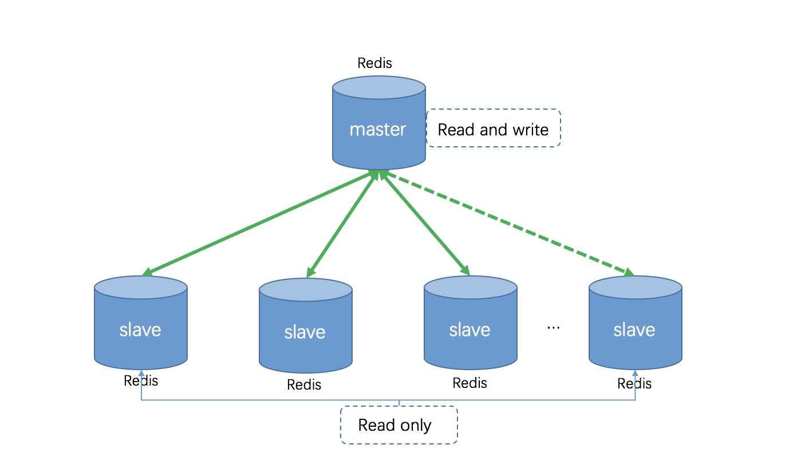
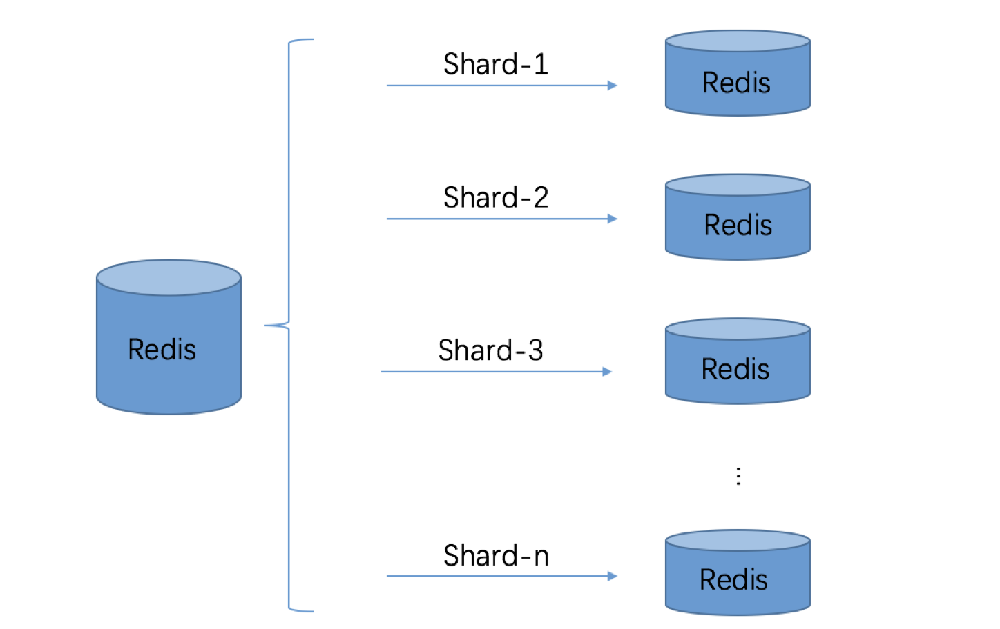
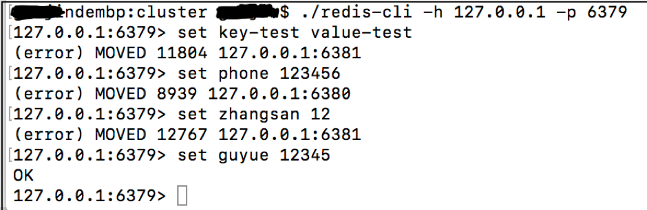
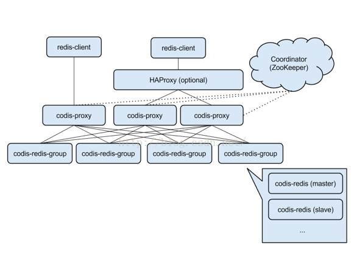
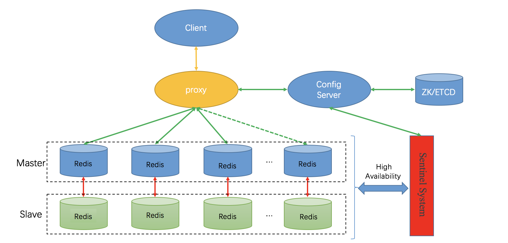

- 01 开篇词：从中间件开始学习分布式.md.html
- 02 走进分布式中间件（课前必读）.md.html
- 03 主流分布式缓存方案的解读及比较.md.html
- 04 分布式一致性协议 Gossip 和 Redis 集群原理解析.md.html
- 05 基于 Redis 的分布式缓存实现及加固策略.md.html
- 06 Redis 实际应用中的异常场景及其根因分析和解决方案.md.html
- 07 Redis-Cluster 故障倒换调优原理分析.md.html
- 08 基于 Redis 的分布式锁实现及其踩坑案例.md.html
- 09 分布式一致性算法 Raft 和 Etcd 原理解析.md.html
- 10 基于 Etcd 的分布式锁实现原理及方案.md.html
- 11 主流的分布式消息队列方案解读及比较.md.html
- 12 搭建基于 Kafka 和 ZooKeeper 的分布式消息队列.md.html
- 13 深入解读基于 Kafka 和 ZooKeeper 的分布式消息队列原理.md.html
- 14 深入浅出解读 Kafka 的可靠性机制.md.html
04 分布式一致性协议 Gossip 和 Redis 集群原理解析
Redis 是一个开源的、高性能的 Key-Value 数据库。基于 Redis 的分布式缓存已经有很多成功的商业应用，其中就包括阿里 ApsaraDB，阿里 Tair 中的 RDB 引擎，美团 MOS 以及腾讯云 CRS。本文我将着重介绍 Redis Cluster 原理、类 Codis 分布式方案以及分布式信息一致性协议 Gossip，以帮助大家深入理解 Redis。
1. Redis 单机模式
顾名思义，单机模式指 Redis 主节点以单个节点的形式存在，这个主节点可读可写，上面存储数据全集。在3.0版本之前，Redis 只能支持单机模式，出于可靠性考量，通常单机模式为“1主 N 备”的结构，如下所示：

需要说明的是，即便有很多个 Redis 主节点，只要这些主节点以单机模式存在，本质上仍为单机模式。单机模式比较简单，足以支撑一般应用场景，但单机模式具有固有的局限性：不支持自动故障转移，扩容能力极为有限（只能 Scale Up，垂直扩容），存在高并发瓶颈。
1.1 不支持自动故障转移
Redis 单机模式下，即便是“1主 N 备”结构，当主节点故障时，备节点也无法自动升主，即无法自动故障转移（Failover）。故障转移需要“哨兵”Sentinel 辅助，Sentinel 是 Redis 高可用的解决方案，由一个或者多个 Sentinel 实例组成的系统可以监视 Redis 主节点及其从节点，当检测到 Redis 主节点下线时，会根据特定的选举规则从该主节点对应的所有从节点中选举出一个“最优”的从节点升主，然后由升主的新主节点处理请求。具有 Sentinel 系统的单机模式示意图如下：
1.2 扩容能力极为有限
这一点应该很好理解，单机模式下，只有主节点能够写入数据，那么，最大数据容量就取决于主节点所在物理机的内存容量，而物理机的内存扩容（Scale Up）能力目前仍是极为有限的。
1.3 高并发瓶颈
Redis 使用单线程的 IO 复用模型，对于单纯的 IO 操作来说，单线程可以将速度优势发挥到最大，但 Redis 也提供了一些简单的计算功能，比如排序、聚合等，对于这些操作，单线程模型实际会严重影响整体吞吐量，CPU 计算过程中，整个 IO 调度都会被阻塞住。因此，单机模式下并发支持能力很容易陷入瓶颈。
2. Redis Cluster
单实例 Redis 虽然简单，但瓶颈明显。一是容量问题，在一些应用场景下，数据规模可达数十 G，甚至数百 G，而物理机的资源却是有限的，内存无法无限扩充；二是并发性能问题，Redis 号称单实例10万并发，但也仅仅是10万并发。鉴于单机模式的局限性，历时三年，Redis Cluster 应运而生。
2.1 Redis Cluster 特点
自3.0版本起，Redis 官方推出了一个原生的分布式方案—— Redis Cluster。它是一个分布式、容错的 Redis 实现。Redis Cluster中不存在中心节点或者代理节点，集群主要设计目标之一是实现线性可扩展性。
Redis Cluster 具有以下特点：
- 节点互通：所有的 Redis 节点彼此互联（PING-PONG机制），内部使用二进制协议优化传输速度和带宽；
- 去中心化：Redis Cluster 不存在中心节点，每个节点都记录有集群的状态信息，并且通过 Gossip 协议，使每个节点记录的信息实现最终一致性；
- 客户端直连：客户端与 Redis 节点直连，不需要中间 Proxy 层，客户端不需要连接集群所有节点，连接集群中任何一个可用节点即可；
- 数据分片：Redis Cluster 的键空间被分割为 16384 个 Slot，这些 Slot 被分别指派给主节点，当存储 Key-Value 时，根据 CRC16(key) Mod 16384的值，决定将一个 Key-Value 放到哪个 Slot 中；
- 多数派原则：对于集群中的任何一个节点，需要超过半数的节点检测到它失效（pFail），才会将其判定为失效（Fail）；
- 自动 Failover：当集群中某个主节点故障后（Fail），其它主节点会从故障主节点的从节点中选举一个“最佳”从节点升主，替代故障的主节点；
- 功能弱化：集群模式下，由于数据分布在多个节点，不支持单机模式下的集合操作，也不支持多数据库功能，集群只能使用默认的0号数据库；
- 集群规模：官方推荐的最大节点数量为 1000 个左右，这是因为当集群规模过大时，Gossip 协议的效率会显著下降，通信成本剧增。
2.2 Redis-Cluster 实现基础：分片
Redis 集群实现的基础是分片，即将数据集有机的分割为多个片，并将这些分片指派给多个 Redis 实例，每个实例只保存总数据集的一个子集。利用多台计算机内存和来支持更大的数据库，而避免受限于单机的内存容量；通过多核计算机集群，可有效扩展计算能力；通过多台计算机和网络适配器，允许我们扩展网络带宽。
基于“分片”的思想，Redis 提出了 Hash Slot。Redis Cluster 把所有的物理节点映射到预先分好的16384个 Slot 上，当需要在 Redis 集群中放置一个 Key-Value 时，根据 CRC16(key) Mod 16384的值，决定将一个 Key 放到哪个 Slot 中。

2.3 Redis Cluster 请求路由方式
客户端直连 Redis 服务，进行读写操作时，Key 对应的 Slot 可能并不在当前直连的节点上，经过“重定向”才能转发到正确的节点。如下图所示，我们直接登录 127.0.0.1:6379 客户端，进行 Set 操作，当 Key 对应的 Slot 不在当前节点时（如 key-test)，客户端会报错并返回正确节点的 IP 和端口。Set 成功则返回 OK。

以集群模式登录 127.0.0.1:6379 客户端（注意命令的差别：-c 表示集群模式)，则可以清楚的看到“重定向”的信息，并且客户端也发生了切换：“6379” -> “6381”。
以三节点为例，上述操作的路由查询流程示意图如下所示：
和普通的查询路由相比，Redis Cluster 借助客户端实现的请求路由是一种混合形式的查询路由，它并非从一个 Redis 节点到另外一个 Redis，而是借助客户端转发到正确的节点。
实际应用中，可以在客户端缓存 Slot 与 Redis 节点的映射关系，当接收到 MOVED 响应时修改缓存中的映射关系。如此，基于保存的映射关系，请求时会直接发送到正确的节点上，从而减少一次交互，提升效率。
目前，包括 Lettuce、Jedis、Redission 在内的许多 Redis Client，都已经实现了对 Redis Cluster 的支持，关于客户端的内容，将在第05课中详细介绍。
3. Redis Cluster 节点通信原理：Gossip 算法
在第02课中曾介绍，Redis 自3.0版本起，支持 Redis Cluster，真正意义上实现了分布式。在分布式系统中，节点间的通信十分重要，是构建集群的基石。那么 Redis Cluster 中，节点间是如何通信的呢？又是如何保障一致性、可用性的呢？欲知答案，必先了解 Gossip 算法。
3.1 Gossip 简介
Gossip 算法源自流行病学的研究，经过不断的发展演化，作为一种分布式一致性协议而得到广泛应用，如 Cassandra、Akka、Redis 都有用到。
Gossip 背景
Gossip 算法如其名，在办公室，只要一个人八卦一下，在有限的时间内所有的人都会知道该八卦的信息，这种方式也与病毒传播类似，因此 Gossip 有众多的别名，如“闲话算法”、“疫情传播算法”、“病毒感染算法”、“谣言传播算法”。但 Gossip 并不是一个新东西，之前的泛洪查找、路由算法都归属于这个范畴，不同的是 Gossip 给这类算法提供了明确的语义、具体实施方法及收敛性证明。
Gossip 特点
Gossip 算法又被称为反熵（Anti-Entropy），熵是物理学上的一个概念，代表杂乱无章，而反熵就是在杂乱无章中寻求一致，这充分说明了 Gossip 的特点：在一个有界网络中，每个节点都随机地与其它节点通信，经过一番杂乱无章的通信，最终所有节点的状态都会达成一致。每个节点可能知道所有其它节点，也可能仅知道几个邻居节点，只要这些节可以通过网络连通，最终它们的状态都是一致的。
要注意到的一点是，即使有的节点因宕机而重启，有新节点加入，但经过一段时间后，这些节点的状态也会与其他节点达成一致，也就是说，Gossip 天然具有分布式容错的优点。
Gossip 本质
Gossip 是一个带冗余的容错算法，更进一步，Gossip 是一个最终一致性算法。虽然无法保证在某个时刻所有节点状态一致，但可以保证在“最终”所有节点一致，“最终”是一个现实中存在，但理论上无法证明的时间点。
因为 Gossip 不要求节点知道所有其它节点，因此又具有去中心化的特点，节点之间完全对等，不需要任何的中心节点。实际上 Gossip 可以用于众多能接受“最终一致性”的领域：失败检测、路由同步、Pub/Sub、动态负载均衡。
但 Gossip 的缺点也很明显，冗余通信会对网路带宽、CUP 资源造成很大的负载，而这些负载又受限于通信频率，该频率又影响着算法收敛的速度，下文中，我将结合 Redis 源码详细解释。
3.2 Gossip 在 Redis Cluster 中的作用
在分布式系统中，需要提供维护节点元数据信息的机制，所谓元数据是指节点负责哪些数据、主从属性、是否出现故障等状态信息。常见的元数据维护方式分为集中式和无中心式。Redis Cluster 采用 Gossip 协议实现了无中心式。
Redis Cluster 中使用 Gossip 主要有两大作用：
- 去中心化，以实现分布式和弹性扩展；
- 失败检测，以实现高可用；
3.3 节点通信基础
Redis Cluster 中的每个 Redis 实例监听两个 TCP 端口，6379（默认）用于服务客户端查询，16379（默认服务端口+10000）用于集群内部通信。集群中节点通信方式如下：
- 每个节点在固定周期内通过特定规则选择几个节点发送 Ping 消息；
- 接收到 Ping 消息的节点用 Pong 消息作为响应。
集群中每个节点通过一定规则挑选要通信的节点，每个节点可能知道全部节点，也可能仅知道部分节点，只要这些节点彼此可以正常通信，最终它们会达到一致的状态。当节点故障、新节点加入、主从关系变化、槽信息变更等事件发生时，通过不断的 Ping/Pong 消息通信，经过一段时间后所有的节点都会知道集群全部节点的最新状态，从而达到集群状态同步的目的。
3.4 Gossip 消息种类
Gossip 协议的主要职责就是信息交换。信息交换的载体就是节点彼此发送的Gossip 消息，常用的 Gossip 消息可分为：Ping 消息、Pong 消息、Meet 消息、Fail 消息。
- Meet 消息：用于通知新节点加入。消息发送者通知接收者加入到当前集群，Meet 消息通信正常完成后，接收节点会加入到集群中并进行周期性的 Ping、Pong 消息交换；
- Ping 消息：集群内交换最频繁的消息，集群内每个节点每秒向多个其它节点发送 Ping 消息，用于检测节点是否在线和交换彼此状态信息。Ping 消息发送封装了自身节点和部分其它节点的状态数据；
- Pong 消息：当接收到 Ping、Meet 消息时，作为响应消息回复给发送方确认消息正常通信。Pong 消息内部封装了自身状态数据。节点也可以向集群内广播自身的 Pong 消息来通知整个集群对自身状态进行更新；
- Fail 消息：当节点判定集群内另一个节点下线时，会向集群内广播一个 Fail 消息，其他节点接收到 Fail 消息之后把对应节点更新为下线状态。
4. Redis Cluster 节点通信：成本与效率的权衡
由于集群内部需要频繁地进行节点信息交换，而 Ping/Pong 消息携带当前节点和部分其它节点的状态数据，势必会加重带宽和计算的负担。Redis 集群内节点通信采用固定频率（定时任务每秒执行10次），因此，节点每次选择需要通信的节点列表变得非常重要。通信节点选择过多虽然可以做到信息及时交换但成本过高。节点选择过少则会降低集群内所有节点彼此信息交换的频率，从而影响故障判定、新节点发现等需求的速度。因此 Redis 集群的 Gossip 协议需要兼顾信息交换实时性和成本开销。
4.1 节点间是如何交换信息的？
Redis 节点启动之后，会每间隔 100ms 执行一次集群的周期性函数 clusterCron()。在 Redis 源码 server.c 中可见：
/* Run the Redis Cluster cron. */
run_with_period(100) {
if (server.cluster_enabled) clusterCron();
}
而 clusterCron() 中又会调用 clusterSendPing() 函数，该函数用于将随机选择的节点的信息加入到 Ping 消息体中，然后发送出去。部分源码如下：
void clusterSendPing(clusterLink *link, int type) {
unsigned char *buf;
clusterMsg *hdr;
int gossipcount = 0; /* Number of gossip sections added so far. */
int wanted; /* Number of gossip sections we want to append if possible. */
int totlen; /* Total packet length. */
// freshnodes = 集群总节点数 - (2=当前节点+发送消息的目的节点)
// freshnodes 的值是ping消息体中可以携带节点信息的最大值
int freshnodes = dictSize(server.cluster->nodes)-2;
// wanted 的值是集群节点的十分之一向下取整，并且最小等于3
// wanted 表示ping消息体中期望携带的其它节点信息个数
wanted = floor(dictSize(server.cluster->nodes)/10);
if (wanted < 3) wanted = 3;
// 因此 wanted 最多等于 freshnodes。
if (wanted > freshnodes) wanted = freshnodes;
// 计算分配消息的最大空间
totlen = sizeof(clusterMsg)-sizeof(union clusterMsgData);
totlen += (sizeof(clusterMsgDataGossip)*wanted);
// 消息的总长最少为一个消息结构的大小
if (totlen < (int)sizeof(clusterMsg)) totlen = sizeof(clusterMsg);
// 分配空间
buf = zcalloc(totlen);
hdr = (clusterMsg*) buf;
// 设置发送PING命令的时间
if (link->node && type == CLUSTERMSG_TYPE_PING)
link->node->ping_sent = mstime();
// 构建消息的头部
clusterBuildMessageHdr(hdr,type);
int maxiterations = wanted*3;
// 循环体，构建消息内容
while(freshnodes > 0 && gossipcount < wanted && maxiterations--) {
// 随机选择一个集群节点
dictEntry *de = dictGetRandomKey(server.cluster->nodes);
clusterNode *this = dictGetVal(de);
clusterMsgDataGossip *gossip;
int j;
// 1. 跳过当前节点，不选myself节点，myself代表当前节点
if (this == myself) continue;
// 2. 偏爱选择处于下线状态或疑似下线状态的节点
if (maxiterations > wanted*2 &&
!(this->flags & (CLUSTER_NODE_PFAIL|CLUSTER_NODE_FAIL)))
continue;
// 以下节点不能作为被选中的节点：
/*
1. 处于握手状态的节点
2. 带有NOADDR标识的节点
3. 因为不处理任何槽而断开连接的节点
*/
if (this->flags & (CLUSTER_NODE_HANDSHAKE|CLUSTER_NODE_NOADDR) ||
(this->link == NULL && this->numslots == 0))
{
freshnodes--; /* Tecnically not correct, but saves CPU. */
continue;
}
}
//(中间部分代码省略.............)
// 发送消息
clusterSendMessage(link,buf,totlen);
zfree(buf);
}
根据上述代码，相信读者可以明确以下两点：
- 当前节点向另一个节点发送 Ping 消息时，携带的其它节点的消息数量至少为3，最大等于集群节点总数-2；
- 为 Ping 消息体中选择携带的其它节点的信息时，采用的是混合选择模式：随机选择+偏好性选择，这样不仅可以保证 Gossip 协议随机传播的原则，还可以尽量将当前节点掌握的其它节点的故障信息传播出去。
4.2 如何保证消息传播的效率？
前面已经提到，集群的周期性函数 clusterCron() 执行周期是 100ms，为了保证传播效率，每10个周期，也就是 1s，每个节点都会随机选择5个其它节点，并从中选择一个最久没有通信的节点发送 ing消息，源码如下：
当然，这样还是没法保证效率，毕竟5个节点是随机选出来的，其中最久没有通信的节点不一定是全局“最久”。因此，对哪些长时间没有“被” 随机到的节点进行特殊照顾：每个周期（100ms）内扫描一次本地节点列表，如果发现节点最近一次接受 Pong 消息的时间大于 cluster_node_timeout/2，则立刻发送 Ping 消息，防止该节点信息太长时间未更新。源码如下：
4.3 规模效应——无法忽略的成本问题
关键参数 cluster_node_timeout
从上面的分析可以看出，cluster_node_timeout 参数对消息发送的节点数量影响非常大。当带宽资源紧张时，可以适当调大这个参数，如从默认15秒改为30秒来降低带宽占用率。但是，过度调大 cluster_node_timeout 会影响消息交换的频率从而影响故障转移、槽信息更新、新节点发现的速度，因此需要根据业务容忍度和资源消耗进行平衡。同时整个集群消息总交换量也跟节点数成正比。
消息体与集群规模
每个 Ping 消息的数据量体现在消息头和消息体中，其中消息头空间占用相对固定。消息体会携带一定数量的其它节点信息用于信息交换，消息体携带数据量跟集群的节点数息息相关，更大的集群每次消息通信的成本也就更高，因此对于 Redis 集群来说并不是越大越好。
5. Redis Cluster 故障转移
上面已经介绍过单机模式的故障转移（主节点下线后，对应从节点升主并替代原主节点继续工作）过程，单机模式下故障转移需要 Sentinel 系统的辅助，与之不同，Redis 集群模式故障转移并不需要 Sentinel 系统辅助，而是通过集群内部主节点选举完成，是一个“自治”的系统。
Redis Cluster 的故障转移可划分为三大步骤：故障检测、从节点选举以及故障倒换，以下详细介绍。
5.1 故障检测
故障检测需要经历单节点视角检测、检测信息传播、下线判决三个步骤，下文将详细介绍。
单点视角检测
集群中的每个节点都会定期通过集群内部通信总线向集群中的其它节点发送 Ping 消息，用于检测对方是否在线。如果接收 Ping 消息的节点没有在规定的时间内向发送 Ping 消息的节点返回 Pong 消息，那么，发送 Ping 消息的节点就会将接收 Ping 消息的节点标注为疑似下线状态（Probable Fail，Pfail）。
检测信息传播
集群中的各个节点会通过相互发送消息的方式来交换自己掌握的集群中各个节点的状态信息，如在线、疑似下线（Pfail）、下线（Fail）。例如，当一个主节点 A 通过消息得知主节点 B 认为主节点 C 疑似下线时，主节点 A 会更新自己保存的集群状态信息，将从 B 获得的下线报告保存起来。
基于检测信息作下线判决
如果在一个集群里，超过半数的持有 Slot（槽）的主节点都将某个主节点 X 报告为疑似下线，那么，主节点 X 将被标记为下线（Fail），并广播出去，所有收到这条 Fail 消息的节点都会立即将主节点 X 标记为 Fail。至此，故障检测完成。
5.2 选举
主节点被标记为 Fail 后，对应的从节点会发起投票，竞争升主。历经从节点拉票、主节点投票、投票裁决等环节，最终完成选举。以下是详细过程。
从节点拉票
基于故障检测信息的传播，集群中所有正常节点都将感知到某个主节点下线的信息，当然也包括这个下线主节点的所有从节点。当从节点发现自己复制的主节点状态为已下线时，从节点就会向集群广播一条请求消息，请求所有收到这条消息并且具有投票权的主节点给自己投票。
拉票优先级
严格的讲，从节点在发现其主节点下线时，并非立即发起故障转移流程而进行“拉票”的，而是要等待一段时间，在未来的某个时间点才发起选举。这个时间点有如下计算表达式：
mstime() + 500ms + random()%500ms + rank*1000ms
其中，固定延时 500ms，是为了留出时间，使主节点下线的消息能传播到集群中其他节点，这样集群中的主节点才有可能投票；随机延时是为了避免两个从节点同时开始故障转移流程；rank 表示从节点的排名，排名是指当前从节点在下线主节点的所有从节点中的排名，排名主要是根据复制数据量来定，复制数据量越多，排名越靠前，因此，具有较多复制数据量的从节点可以更早发起故障转移流程，从而更可能成为新的主节点。
主节点投票
如果一个主节点具有投票权（负责处理 Slot 的主节点)，并且这个主节点尚未投票给其它从节点，那么这个主节点将向请求投票的从节点返回一条回应消息，表示支持该从节点升主。
根据投票结果决策
在一个具有 N 个主节点投票的集群中，理论上每个参与拉票的从节点都可以收到一定数量的主节点投票，但是，在同一轮选举中，只可能有一个从节点收到的票数大于 N/2 + 1，也只有这个从节点可以升级为主节点，并代替已下线的主节点继续工作。
选举失败
跟生活中的选举一样，选举可能失败——没有一个候选从节点获得超过半数的主节点投票。遇到这种情况，集群将会进入下一轮选举，直到选出新的主节点为止。
选举算法
选举新主节点的算法是基于 Raft 算法的 Leader Election 方法来实现的，本文就不展开了，在本课程后面介绍 ETCD 的章节中会详述 Raft 算法。
5.3 故障转移
选举完成后，获胜的从节点将发起故障转移（Failover），角色从 Slave 切换为 Master，并接管原来主节点的 Slots，详细过程如下。
身份切换
通过选举晋升的从节点会执行一系列的操作，清除曾经为从的信息，改头换面，成为新的主节点。
接管职权
新的主节点会通过轮询所有 Slot，撤销所有对已下线主节点的 Slot 指派，消除影响，并且将这些 Slot 全部指派给自己。
广而告之
升主了嘛，必须让圈子里面的都知道，新的主节点会向集群中广播一条 Pong 消息，将自己升主的信息通知到集群中所有节点。
履行义务
在其位谋其政，新的主节点开始处理自己所负责 Slot 对应的请求，至此，故障转移完成。
6. Redis Cluster 扩容
随着应用场景的升级，缓存可能需要扩容，扩容的方式有两种：垂直扩容（Scale Up）和水平扩容（Scale Out)。垂直扩容无需详述。实际应用场景中，采用水平扩容更多一些，根据是否增加主节点数量，水平扩容方式有两种。
方式1：主节点数量不变。
比如，当前有一台物理机 A，构建了一个包含3个 Redis 实例的集群；扩容时，我们新增一台物理机 B，拉起一个 Redis 实例并加入物理机 A 的集群；B 上 Redis 实例对 A 上的一个主节点进行复制，然后进行主备倒换；如此，Redis 集群还是3个主节点，只不过变成了 A2-B1 的结构，将一部分请求压力分担到了新增的节点上，同时物理容量上限也会增加，主要步骤如下：
- 将新增节点加入集群；
- 将新增节点设置为某个主节点的从节点，进而对其进行复制；
- 进行主备倒换，将新增的节点调整为主。
方式2：增加主节点数量。
不增加主节点数量的方式扩容比较简单，但是，从负载均衡的角度来看，并不是很好的选择。例如，如果主节点数量较少，那么单个节点所负责的 Slot 的数量必然较多，很容易出现大量 Key 的读写集中于少数节点的现象，而增加主节点的数量，可以更有效的分摊访问压力，充分利用资源。主要步骤如下：
- 将新增节点加入集群；
- 将集群中的部分 Slot 迁移至新增的节点。
7. 其它分布式 Redis 方案
作为 Redis 官方出品，Redis Cluster 有很多优点，但是，当集群规模超过百节点级别后，Gossip 协议的效率将会显著下降，通信成本越来越高。此外，Redis Cluster 模式下，16384个 Slot 中只要有任意一个 Slot 不可用，整个集群都将不可用，换言之，任何一个被指派 Slot 的主节点故障，在其恢复期间，集群都是不可用的。鉴于此，Redis Cluster 并不适合超大规模商用场景，国内 IT 巨头基本上采用的都是自研的集群方案，如阿里云 ApsaraDB for Redis/ApsaraCache，腾讯的 CRS。当然，Redis Cluster 也有很成功的商用案例，像亚马逊采用的就是 Redis Cluster。
注意，通常 Redis Cluster 的规模都控制在400个节点以内，以单节点支撑 8W QPS 计算，400个节点可支持
200*8=1600WQPS（每个主节点配置一个从节点），足以支撑绝大多数应用场景。此外，Redis Cluster 使用简单，无需深度定制便可实现商用，成本较低，因此，即便它不适合超大规模商用，仍然是一个非常优秀的集群方案。
7.1 预备知识
分片是 Redis 实现分布式架构的基础，主流的分片方式有：客户端分片和代理分片。欲理解 Redis 各个分布式方案，必先了解两种分片方式的原理。
基于客户端的分片
如下图所示，客户端与 Redis 节点直连，为了提高可用性，每个主节点挂一个从节点，故障倒换可由“哨兵”系统实现（其它方案也可实现）。客户端对任何一个主节点的读写操作本质上就是单机模式下的读写操作；对于一个 Key-Value，其读写节点完全由客户端决定。比如，采用 Hash 算法：
hash(key)%N = 目标节点编号， 其中 N 为 Redis 主节点的数量，哈希取余的方式会将不同的 Key 分发到不同的 Redis 主节点上。
但是，Hash 算法有很多缺陷：
- 不支持动态增加节点：当业务量增加，需要增加服务器节点后，上面的计算公式变为：
hash(key)%(N+1)，那么，对于同一个 Key-Value，增加节点前后，对应的 Redis 节点可能是完全不同的，可能导致大量之前存储的数据失效；为了解决这个问题，需要将所有数据重新计算 Hash 值，再写入 Redis 服务器。 - 不支持动态减少节点，原理同上。
鉴于 Hash 算法的不足，在实际应用中一般采用“一致性哈希”算法，在增删节点的时候，可以保证尽可能多的缓存数据不失效。关于一致性哈希算法，网上文章很多，读者可自行研读。
采用客户端分片具有逻辑简单，性能高的优点，但缺点也很明显，主要有业务逻辑与数据存储逻辑耦合，可运维性差；多业务各自使用 Redis，集群资源难以管理。
基于代理的分片
为了克服客户端分片业务逻辑与数据存储逻辑耦合的不足，可以通过 Proxy 将业务逻辑和存储逻辑隔离。客户端发送请求到一个代理，代理解析客户端的数据，将请求转发至正确的节点，然后将结果回复给客户端。这种架构还有一个优点就是可以把 Proxy 当成一个中间件，在这个中间件上可以做很多事情，比如可以把集群和主从的兼容性做到几乎一致，可以做无缝扩减容、安全策略等。
基于代理的分片已经有很多成熟的方案，如开源的 Codis，阿里云的 ApsaraDB for Redis/ApsaraCache，腾讯的 CRS 等。很多大企业也在采用 Proxy+Redis-Server 的架构。
基本原理如下图所示：
我们来了解下代理分片的缺点。没有完美的架构，由于使用了 Proxy，带宽和 CPU 基本都要加倍，对资源的消耗会大很多。
7.2 Codis 架构
Codis 是一个分布式 Redis 解决方案，对于上层的应用来说，连接到 Codis Proxy 和连接原生的 Redis Server 没有明显的区别 （参考6.1中的代理分片模式），客户端可以像使用单机 Redis 一样使用。
架构图如下：

Codis 简介
从 Codis 的官方架构图可以看出，Codis 主要由四部分组成：
- Codis Proxy（
codis-proxy）：是客户端连接的 Redis 代理服务，它本身实现了 Redis 协议，表现得和一个原生的 Redis 没什么区别 （就像 Twemproxy）。对于一个业务来说，可以部署多个 Codis Proxy，Codis Proxy 本身是无状态的。 - Codis Manager（
codis-config）：是 Codis 的管理工具，支持添加/删除 Redis 节点，添加/删除 Proxy 节点，发起数据迁移等操作。本身还自带了一个 HTTP Server，会启动一个 Dashboard，用户可以直接在浏览器上观察 Codis 集群的运行状态。 - Codis Redis（
codis-server）：是 Codis 项目维护的一个 Redis 分支，基于 2.8.13 开发，加入了对 Slot 的支持和原子的数据迁移指令。 Codis 上层的codis-proxy和codis-config只有和这个版本的 Redis 交互才能正常运行。 - ZooKeeper：Codis 依赖 ZooKeeper 来存放数据路由表和
codis-proxy节点的元信息，codis-config发起的命令都会通过 ZooKeeper 同步到各个存活的codis-proxy。
Codis 特点
Codis 出现在 Redis Cluster 之前，事实上，正是由于 Redis 官方推出 Redis Cluster 太晚，IT 巨头们又都是急性子，只好自力更生，搞大生产运动，才诞生了众多定制化或开源的分布式 Redis 方案。Codis 作为其中的代表，具有以下特点：
- 自动平衡；
- 使用非常简单；
- 图形化的面板和管理工具；
- 支持绝大多数 Redis 命令，完全兼容 Twemproxy；
- 支持 Redis 原生客户端；
- 安全而且透明的数据移植，可根据需要轻松添加和删除节点；
- 提供命令行接口，支持 RESTful APIs。
7.3 类 Codis 架构：Proxy + Redis-Server
在上面曾提到，实现 Redis 分布式的基础是分片。目前，主流的分片方案有三种，即 Redis Cluster、客户端分片、代理分片。除了官方推出的 Redis Cluster，大多数 IT 公司采用的都是基于代理的分片模式，即：Proxy + Redis-Server，这与 Codis 的原理类似，因此也称为“类 Codis”架构，其架构图如下：

该架构有以下特点：
- 分片算法：基于代理的分片原理，将物理节点映射到 Slot（Codis Slot 数为1024，其它方案一般为16384），对 Key-Value 进行读写操作时，采用一致性 Hash 算法或其它算法（如 Redis Cluster采用的 CRC16），计算 Key 对应的 Slot 编号，根据 Slot 编号转发到对应的物理节点；
- 分片实例之间相互独立，每组一个 Master 实例和多个 Slave，其本质就是“1主 N 从”的单机模式；
- 路由信息存放依赖第三方存储组件，如 ZooKeeper 或 Etcd；
- High Availability：Redis 单机模式不支持自动故障倒换，为了保证高可用，需要类似“哨兵系统”的 HA组件来支持高可用。
8. 总结
一个有追求研发者，对开源软件绝不能停留在“知道怎么用”的层面，知其然更要知其所以然，如是，才能举一反三。基于此，本文以极为浓重的笔墨详细解读了 Redis Cluster 的原理，读完本文，相信读者可以真正理解了为什么 Redis Cluster 不适合超大规模商用场景，以及为什么 IT 巨头都更倾向于使用 Proxy+Redis-Server 架构方案。
致谢与参考文献
本文的一些图片和文字引用了一些博客和论文，尊重原创是每一个写作者应坚守的底线，在此，将本文引用过的文章一一列出，以表敬意：